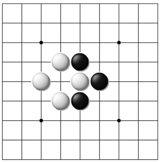
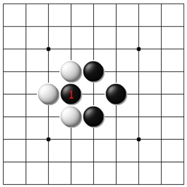
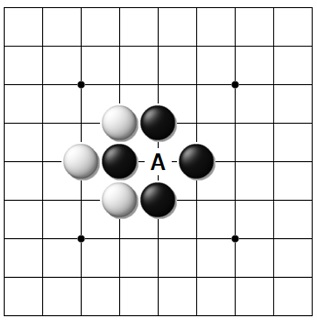
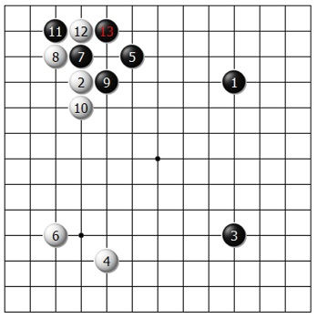
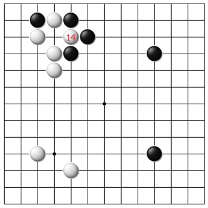
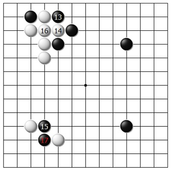
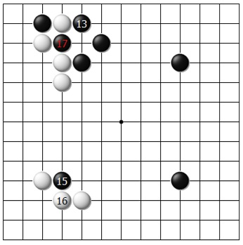

Если одна из сторон захватила камень ко, то другая сторона не может
следующим ходом повторить позицию.
На этих диаграммах показана особая ситуация, которая носит название
ко.
Посмотрим на рис.1. Чёрные, при своей очереди хода, могут захватить белый камень, играя 1 на
рис.2. Получится позиция
рис.3. Теперь у белых появилась возможность захватить камень чёрных ходом в «а», но это приведёт
к повторению позиции,
которая уже была на рис.1. Если разрешить подобное повторное взятие, то обе стороны могут
бесконечно долго продолжать
делать эти ходы, и партия никогда не закончится. Для исключения подобной ситуации введено
простое правило ко.
  
Пример ко из партии. 
В соответствии с правилом ко, чёрные не могут захватить отмеченный камень следующим ходом и должны играть 15 в другом месте доски. Пусть чёрные играют 15 на рис.6. Теперь белые могут соединиться 16 и закрыть ко. Чёрные разделяют белых ходом 17 и разрушают территорию, которую первоначально белые застолбили в левом нижнем углу. 
Этот результат может не понравиться белым. Тогда они сначала защищаются от разрезания ходом 16. Теперь чёрные могут захватить ко ч.17 на рис.7. Теперь белым запрещено брать камень 17 чёрных. Они должны играть в другом месте доски. Такая ко-борьба может существовать на доске довольно долго, прежде чем она разрешится. Победитель определяется общим положением на доске, позицией, которая, как правило, не связана с самой ситуацией ко.